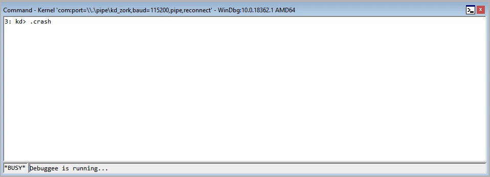
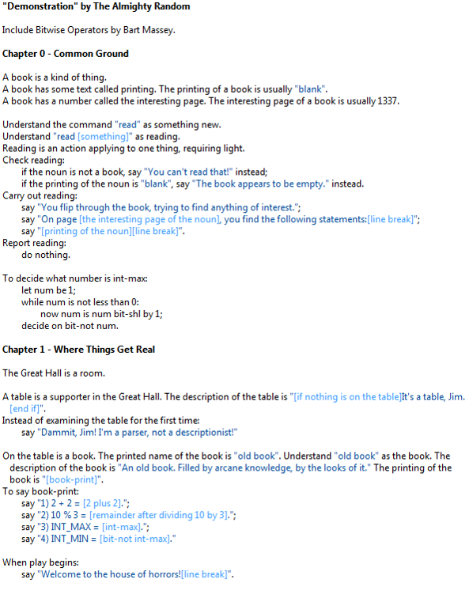
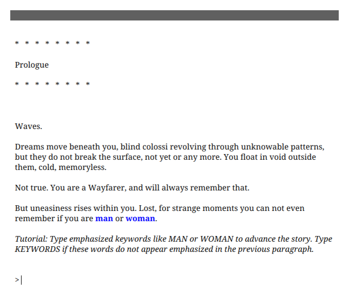
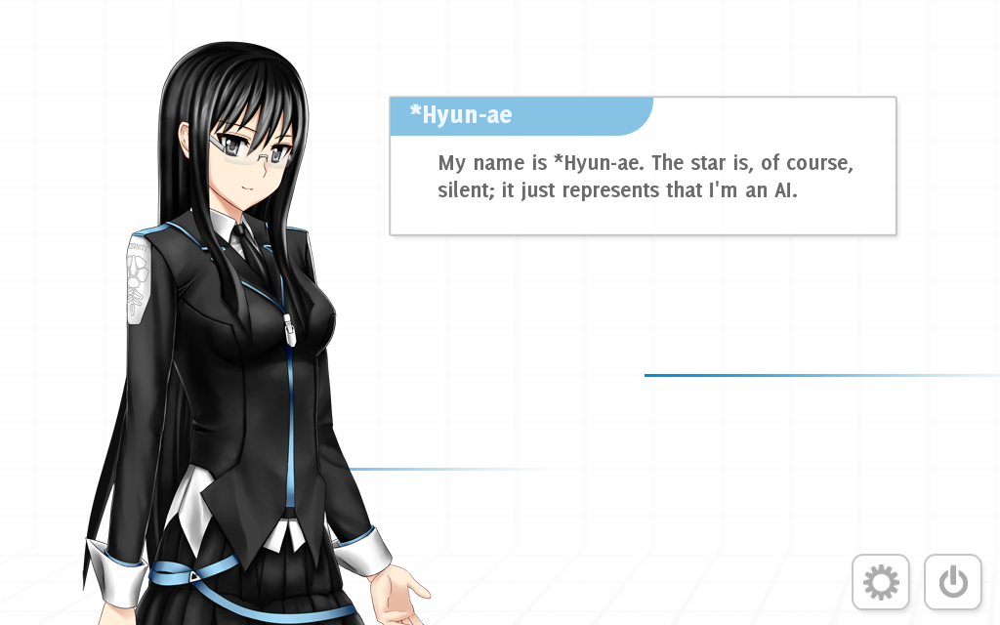
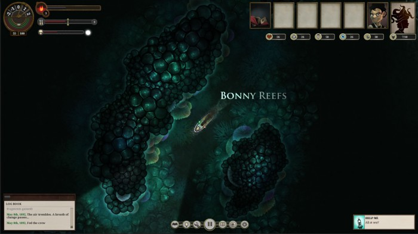
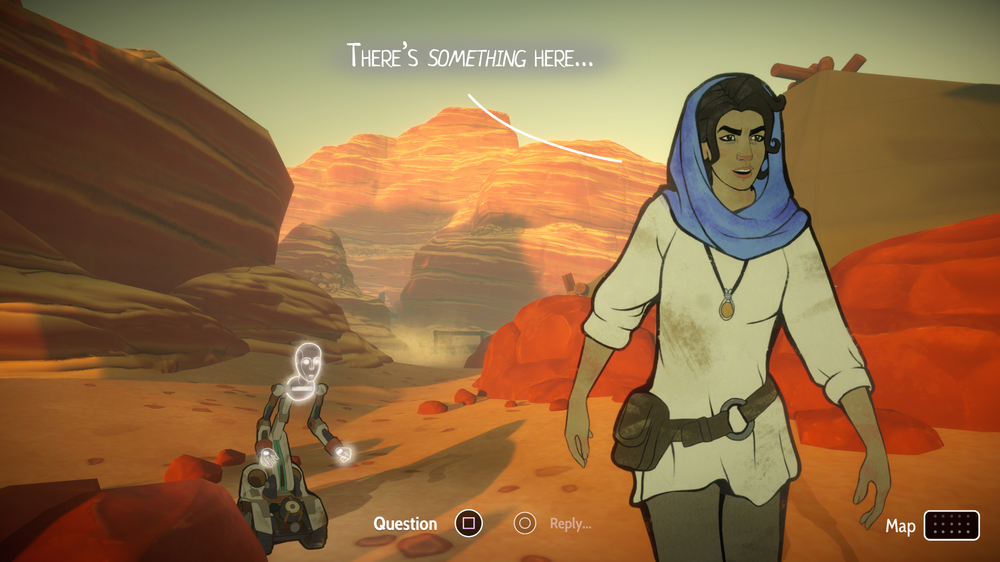

An excerpt from the Get Lamp documentary.
You are standing in an open field west of a white house, with a boarded front door.
There is a small demo here.
What is IF?
In truth, the term is very broad. I'll be talking mostly about
games that use text as their primary medium, with little to no graphics.
This still leaves a lot on the floor, and we'll get to that
at the end of the talk.
A Brief History
Before the first person shooter there was the second person thinker
Very brief, we don't have time for everything.Somewhat biased towards the games I've personally played :)
Quote is from the documentary .
The Setting
The mid-70s
Computers are big
No graphics (mostly)
Full name: Colossal Cave Adventure .
Technically , not the first parser adventure, but it's first enough.
AFAIK the first known one is this .
Well, we're exploring a cave system. Obviously.
The cave itself does not appear until somewhat later in the game...
This is a port to Inform 6 (?), so some of the quirks of the original are lost.
The parser is more advanced, for instance.
This is also the expanded version, so there's a score.
Based on a real cave!
The Mammoth Cave system in Kentucky
Specifically, Colossal Cave
Magic, treasure, and whatnot...
Thus, Colossal Cave Adventure.
Will and his wife, both MIT undergraduates, were part of a team that mapped this system.
Developed by Will Crowther
Expanded by Don Woods
DEC PDP-10
Fortran
Rudimentary parser
Will wrote this game for his daughters to play.
Eventually, lost interest, posted the game to ARPANET, and forgot about it.
A year later, Don Woods (Stanford grad student) contacted him to get the source,
and proceeded to expand the game.
Added more content, a scoring system, an objective (returning the treasures aboveground).
It was a hit
People would spend hours mapping the game, solving the puzzles.
They were hooked.
Then Adventure hit MIT and everything changed
The Inform Designer's Manual, Graham Nelson
See here .
Basically, some MIT dudes decided that they can do Adventure better. And they did.
Their first game was Zork.
Originally for the PDP-10, like Adventure.
First released in 1977.
By 1979 is was huge , scratching the limits of the MDL language.
After founding the company, Zork was split into a trilogy to fit on floppies.
Shipped in 1980 .
Became a cultural phenomenon: "Playboy covered it; so did Time, and American astronaut Sally Ride was reportedly obsessed with it."
The largest and most widely-known company producing IF
Zork, A Mind Forever Voyaging, The Hitchhiker's Guide to the Galaxy
As in, several of their games would be in the top-10 charts.
Sophisticated parser
Cross-platform adventures
Feelies
For instance, parser now allows for chaining commands ("take lamp and drop keys", etc.)
The Z-Machine will also be mentioned a little later in the talk. It's still alive.
A Mind Forever Voyaging
And another one from AMFV .
Bought by Activision in 1986
Shut down in 1989
Trademark abandoned in 2002
1989: Legend Entertainment
Gateway
Eric the Unready
Spellcasting
And others!
Company founded by Infocom veterans.
Commercial IF slowly died
But the spirit lived on!
The companies died-off, but there were still people who wanted to play the games!
InfoTaskForce - a bunch of Australian guys that reverse-engineered the Z-Machine.
In 2020 there were 103 entries to IFComp!
Changing the rules of the genre.
Nominee, Best Game; Nominee, Best NPCs; Winner, Best Individual NPC - 2000 XYZZY Awards
Link .
Winner, Best Game; Nominee, Best Writing; Winner, Best Story; Winner, Best Setting; Nominee, Best NPCs; Winner, Best Individual NPC; Nominee, Best Individual PC; Nominee, Best Use of Medium - 2003 XYZZY Awards
Link .
Windows kernel

Z-Machine running in the Windows kernel, because why not.
Here's how this works.
And then... something magical happened
Authoring
There were, and still are, a lot of different authoring systems.
Legend had their own thing, Infocom. Adventure was custom-built...
I'll talk about some of the interesting ones.
Zork Implementation Language
A derivative of MDL
Which is a derivative of Lisp
Created by Infocom
Manual by Steve Meretzky! Of AMFV fame.
More info about ZIL here .
Created by Graham Nelson in 1993
Inform 6 released 1996
Object-oriented, procedural
Inform 7 released 2006
Natural language programming
Declarative, procedural
Compiles for Z-Machine and Glulx
We'll be talking about Inform 7, but there's a really interesting
story about the creation of the original Inform.
Here .
The first version was released on May 9, 1993.
I think it's very fitting that it happened on Victory Day.
In a sense, this was also a victory.
Glulx is a (relatively) new IF VM.
It's currently in kinda maintenance mode. Last release was in 2015.
Should be open-sourced in the future. See the website for info.
Fun fact: currently Inform 7 compiles to Inform 6, which is compiled to Z-Code or Glulx.
A demo is a kind of thing
A table is a supporter in the Great Hall.
The description of the table is
"[if nothing is on the table]It's a table, Jim.[end if]".
Instead of examining the table for the first time:
say "Dammit, Jim! I'm a parser, not a descriptionist!"

That's it. That's the whole source.
Text Adventure Development System
Similar to C, C++ and the like
Last release was in 2013.
System for CYOA games
Created by Chris Klimas in 2009
Now maintained by the community
Author-friendly
(if:$examined != true)[Demo!]
Developed by inkle
A narrative scripting language for games Integration with Unity
Recently open-sourced!
The idea is that ink manages the narrative script,
but the game engine is responsible for driving it.
Welcome to the house of horrors!
-> intro
=== intro ===
In front of you, you can see a table.
+ {not table_first_time} [Examine the table] -> table_first_time
+ {table_first_time} [Examine the table] -> table_second_time
Some stats
Z-Machine
Glulx
TADS
Twine
ink
Web
45
23
3
45
3
7
Total submissions from IFComp 2020.
What is IF?
The truth is fluid. The truth is subjective.

It's a parser game, but by default it behaves like Twine...

All images are from the game's website .

Images are from the game's website .
Images are from the game's website .

Images are from the game's website .
Commercial IF slowly died, and was reborn!
The InfoTaskForce and Inform paved the way for modern IF.
People used these tools to explore what text games could be.
Some of them went to work on commercial projects.
For instance:
Emily Short
Creative director at Failbetter Games and lead writer for
Mask of the Rose .
Wrote a lot of IF .
Jon Ingold
All this can be traced back to the days of Adventure
When the dreams were bigger
And the future brighter
Something Old
Everything Infocom
Legend Entertainment
An ongoing project that tells about one text game from every year between 1971 and 2021, per week.
By Aaron A. Reed. It's been an enormous source of help for this talk.
Please read Silverwolf. Please.
It is pitch black. You are likely to be eaten by a grue.